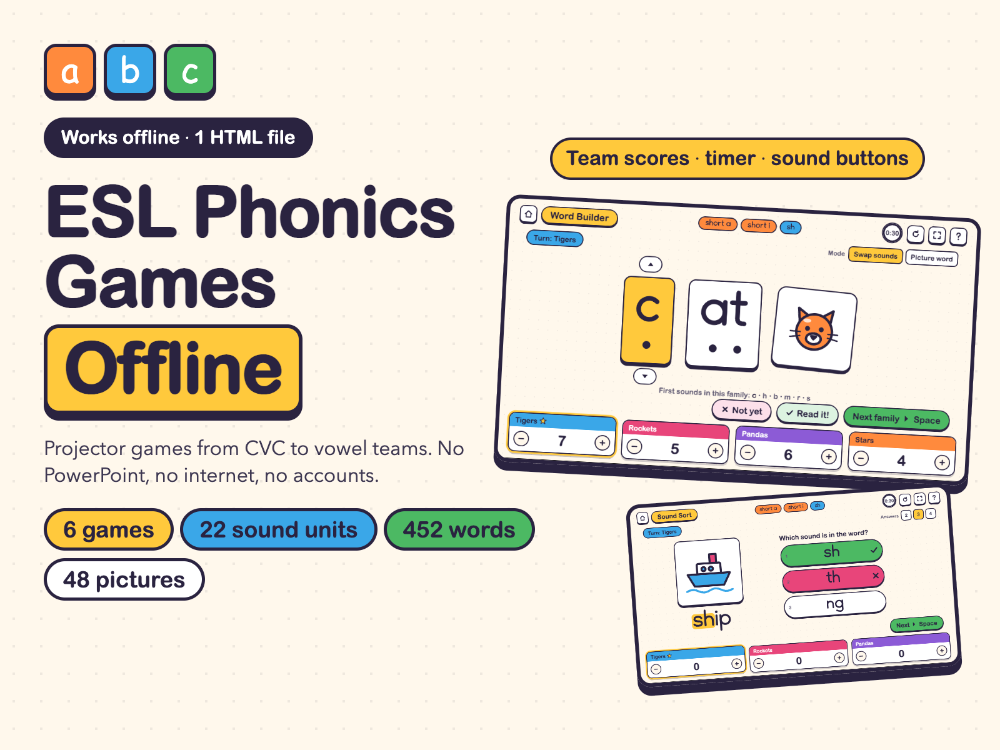
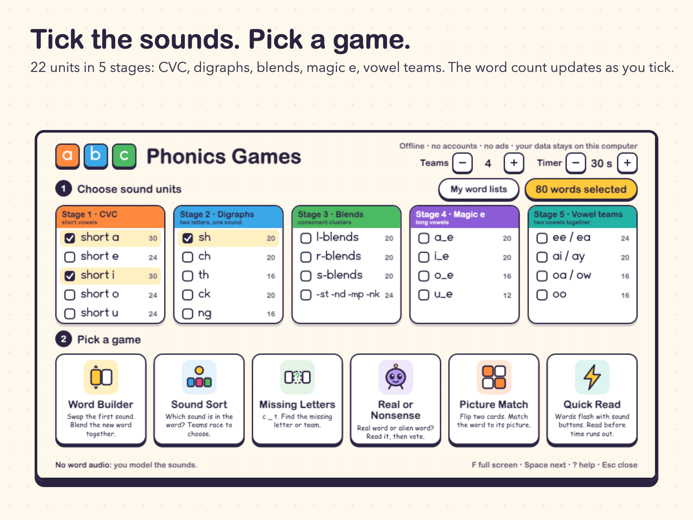
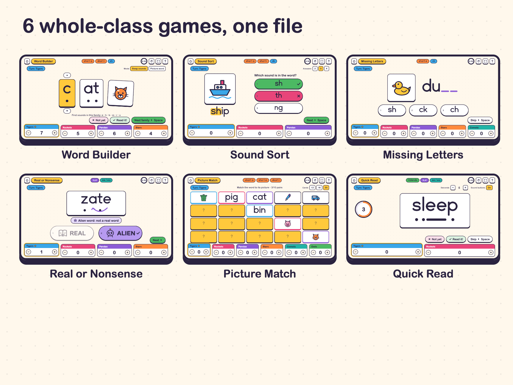
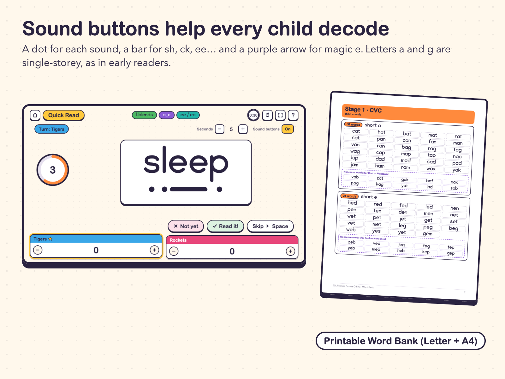
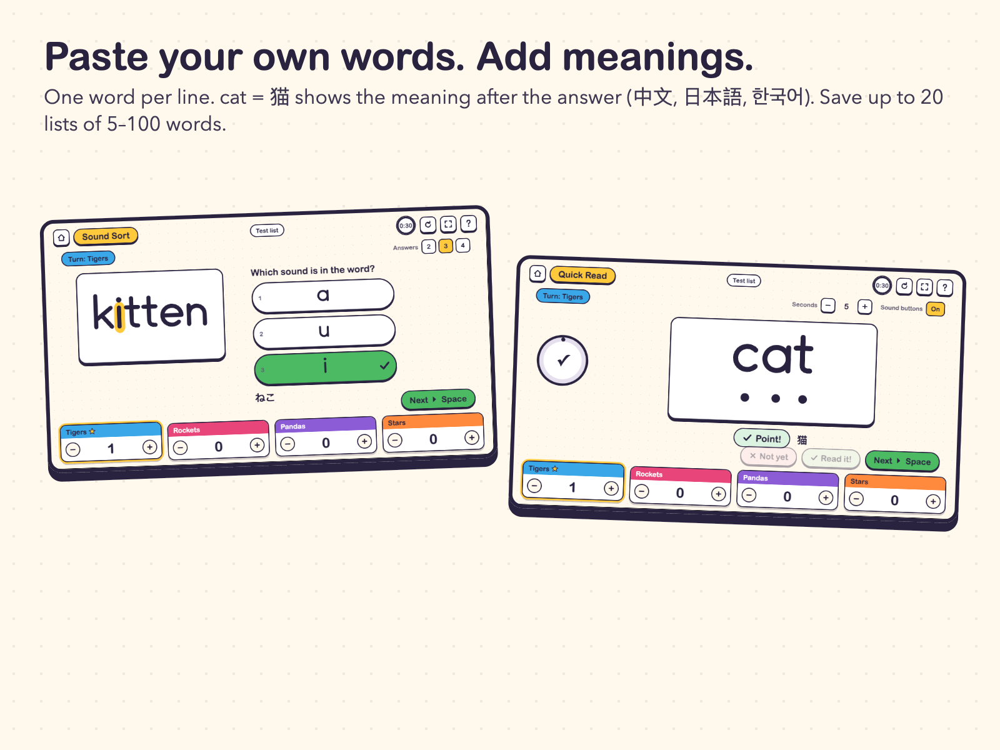

One offline HTML file. 452 decodable words in 22 sound units, 48 original pictures, team scores. No PowerPoint, no internet, no accounts.

$12.00 USD, one-time purchase (no subscription)
Buy now: $12 Free offline demo (HTML)Try it on your classroom computer first. Download the free demo (one HTML file, no email, no signup), unplug the network if you like, and double-click it. It has Word Builder and Sound Sort with the short a and sh units. If the demo runs, the full version runs too: same code. Online tutors: share your screen with the demo to check it runs smoothly on your platform.
14-day no-questions refund. Email chenphien@gmail.com within 14 days of purchase and we refund you in full. You don't need to give a reason.
Satisfaction guarantee. If the file won't open on your classroom computer and we can't fix it with you, you get a full refund.
Secure checkout. Payment is handled by Waffo Pancake, our merchant of record, which accepts the usual international cards and wallets shown on the checkout page. We never see your card details. Your school can pay.
This is a new shop with no reviews yet, and we won't invent any. Instead, every picture below is a real screenshot of the game, the demo video shows real play, the samples further down are copied from the real PDFs, and you can run the free demo offline before you pay.




Class of 4–9-year-olds, 4 teams, units short a + sh. Timer at 30 seconds.
| Minutes | Game | What you do |
|---|---|---|
| 0–3 | Start page | Tick short a and sh (50 words). Rename the teams with the class. |
| 3–9 | Word Builder | Model c-a-t, then swap first sounds: hat, bat, mat. Teams take turns reading; award points. |
| 9–14 | Sound Sort | 3 answers. Children say each picture word aloud and listen for a or sh. |
| 14–19 | Missing Letters | Mini-whiteboards: everyone writes the missing letters, then the team answers. |
| 19–24 | Real or Nonsense | Read together, thumbs up or down, then the team votes. Praise careful decoding of alien words. |
| 24–29 | Quick Read | Start at 8 seconds with sound buttons on; finish at 5 seconds. |
| 29–30 | Team cards | Count the points and celebrate. Press Restart before the next class. |
Next lessons: keep one known unit and add one new unit each week. Print the Word Bank page for the unit as a take-home reading list. Picture Match with 12 cards is a good Friday warm-up.
| Section | Page |
|---|---|
| Set-up and offline use | 3 |
| Word Builder | 4 |
| Sound Sort | 5 |
| Missing Letters | 6 |
| Real or Nonsense | 7 |
| Picture Match | 8 |
| Quick Read | 9 |
| The 22 sound units | 10 |
| Your own word lists | 11 |
| A 30-minute sample lesson | 12 |
cat hat bat mat rat sat pan can fan man van ran bag rag tag wag cap map tap nap lap dad mad sad pad jam ham ram wax yak
ship shop shed shut shell shin fish dish wish cash mash dash hush rush gush brush crash fresh shelf flash
The 13-page Word Bank lists every word of all 22 units plus the 10 alien words per unit, grouped by stage, in US Letter and A4.
A typical PowerPoint phonics game covers one sound and needs PowerPoint; online game sites need a working connection and often a monthly plan. This is one HTML file that covers 22 sound units. Copy it to the classroom computer or a USB stick, double-click it, press F for full screen, and play. It works the same with the network cable unplugged.
Tick the sound units you are teaching (for example short a + sh), choose 2–6 teams, and pick a game:
Right answers add points automatically, and you can adjust any score with + / −. The timer flashes the screen and plays a chime when time is up. Words never repeat until the whole set has been used.
Honest limits: the game has no word or phoneme audio: you model the sounds. It covers phonics from CVC to vowel teams (roughly K–2 / young-learner levels 1–3). It does not include r-controlled vowels (ar, or, er…) or two-syllable words.
Units and word counts: short a 30, short e 24, short i 30, short o 24, short u 24 · sh 20, ch 20, th 16, ck 20, ng 16 · l-blends 20, r-blends 20, s-blends 20, -st/-nd/-mp/-nk 24 · a_e 20, i_e 20, o_e 16, u_e 12 · ee/ea 24, ai/ay 20, oa/ow 16, oo 16. Total 452.
| Free demo | Full version ($12) | |
|---|---|---|
| Games | 2 (Word Builder, Sound Sort) | 6 (+ Missing Letters, Real or Nonsense, Picture Match, Quick Read) |
| Sound units | 2 (short a, sh) | 22 (452 words, 220 alien words, 48 pictures) |
| Your own words | Up to 12, not saved | Up to 100 per list, 20 saved lists, .txt import / export |
| PDFs | None | Quick Start, 12-page Teacher Guide, 13-page Word Bank (Letter + A4) |
One download, ESL-Phonics-Games-Offline.zip. After you pay, the download page also lists every file separately. Unzipped:
ESL-Phonics-Games-Offline/ ESL-Phonics-Games.html 6 games, 22 units, 452 words, 220 alien words, 48 pictures (HTML, offline) Quick-Start-Letter.pdf 1 page (PDF, US Letter) Quick-Start-A4.pdf 1 page (PDF, A4) Teacher-Guide-Letter.pdf 12 pages (PDF, US Letter) Teacher-Guide-A4.pdf 12 pages (PDF, A4) Word-Bank-Letter.pdf 13 pages (PDF, US Letter) Word-Bank-A4.pdf 13 pages (PDF, A4) LICENSE.txt single-teacher licence (TXT)
Does it really work without internet?
Yes. Everything (games, words, pictures, letter shapes, sound effects) is inside the one HTML file. It makes no network requests.
Which computers and browsers work?
Built for current versions of Chrome, Edge, Firefox and Safari on a desktop or laptop computer. Internet Explorer is not supported. The screen is designed for 1920×1080 and scales to fit; it also fits at 1366×768 without scrolling. Open the free demo on your classroom computer first: if the demo runs, the full version runs too.
Can I use my own word list?
Yes. Click My word lists, type one word per line (5–100 words) and save up to 20 lists. Use sh-i-p to mark sound chunks, cat = 猫 to add a meaning shown after the answer, and *vab to add an alien word. Lists can be imported and exported as .txt.
Will clearing the browser cache delete my word lists?
It can. Your own lists are saved in that browser's local storage. Export them as .txt before clearing the cache or changing computers, then import them again. The 452 built-in words are inside the file and are never lost.
Is there audio for the words or sounds?
No. The game shows the spelling, sound buttons and pictures; you model the sounds. The only audio is short beeps for right, wrong and time up.
Can other teachers at my school use it?
The licence is for one teacher in all of their own classes and devices. Colleagues need their own copy; please don't forward the files to other teachers. You may print the Word Bank, Quick Start and Teacher Guide as often as you need for all of your own classes and students.
How do I pay? Does it work from China?
Secure checkout by Waffo Pancake, our merchant of record, which handles the payment and accepts the usual international cards and wallets shown on the checkout page. We never see your card details. Your school can pay; the licence is still for one teacher.
What is the refund policy?
14-day no-questions refund: email chenphien@gmail.com within 14 days of purchase for a full refund (see Terms). And if the file won't open on your classroom computer and we can't fix it with you, you get a full refund.
$12.00 USD, one-time purchase
Buy now: $12Secure checkout by Waffo Pancake (merchant of record). Instant download after payment. Single-teacher licence. 14-day no-questions refund.